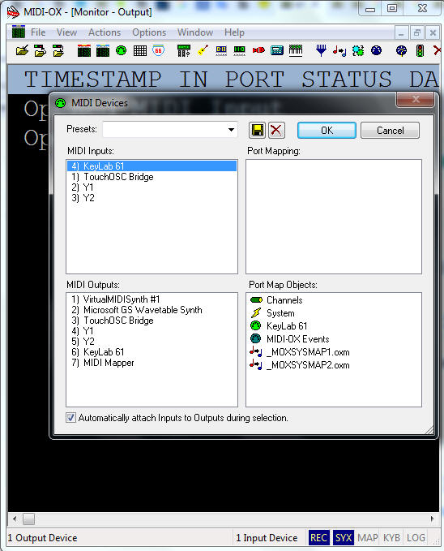
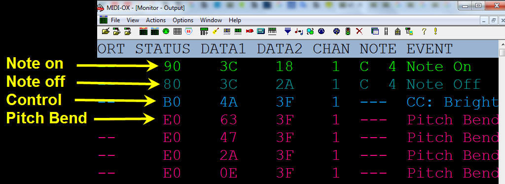
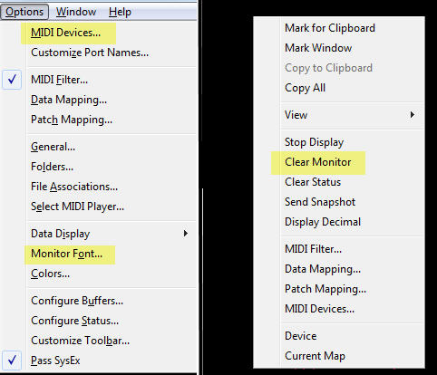

Comprobación del controlador MIDI
En el aula 306 contamos con un controlador MIDI y lo usaremos en nuestros proyectos.
En el caso que no tengas uno en casa, no hay problema Cakewalk tiene incorporado un controlador MIDI virtual que lo puedes usar con el teclado del computador. Más detalles adelante.
Pero si en casa cuentas con un controlador MIDI deberás:
1. Instalar un monitor MIDI gratuito. Para Windows exite el MIDI OX que lo descargas en este enlace.
2. Cierra todos los programas que usen MIDI, instálalo y abre la ventana que aparece en el menú Option \ MIDI Devices.

En la imagen podrás ver que he seleccionado solo la entrada MIDI, esto es porque el controlador que he seleccionado Arturia-KeyLab no tiene sintetizador incorporado, por esa razón no interesa seleccionar puerto de salida MIDI.
2. Eventos que genera un controlador MIDI. Por omisión todo controlador MIDI puede tener los siguientes controles:
- Tecla ( en MIDI verás en la columna de status como mensaje 9n u 8n (la n suele ser 0) no es "noventa" sino "nueve cero" pues lo vemos en hexadecimal. 90h se refiere a mensajes de nota encendida y se genera cuando presionas una tecla. 80h se genera cuando se suelta la tecla
- Perilla. El mensaje que se genera es el mensaje Bn (B0h en el caso de la imagen que muestro a continuación)
- Pitch Bend. El mensaje que se verá será el En (sí, E0h en nuestra imagen)

En nuestro curso, por ahora, sólo necesitaremos conocer tres comando:
- Option \ MIDI Devices : Selecciona puertos MIDI para inspeccionar.
- Option \ Monitor Font : Para escoger un tipo de letra cómoda a la vista
- Click Derecho \ Clear Monitor : Limpia la pantalla
